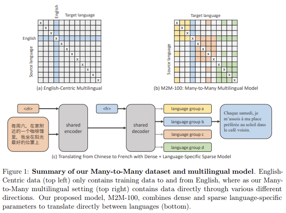

- 딥러닝의 빠른 발전으로 기계번역이 매우 쉬워졌습니다.
- 다양한 모델을 선택할 수 있고, 구독 모델도 여럿 나와있습니다.
- 현명한 소비자가 되기 위해 모델들의 번역 성능을 비교합니다.
1. 번역 성능 평가
BLEU: a method for automatic evaluation of machine translation
유원준, 안상준, “딥 러닝을 이용한 자연어 처리 입문”
- 최근 논문 내용을 요약, 추출하고 번역하여 제공하는 프로그램을 개발중입니다.
- 일반적으로 학술적으로 사용하는 성능 평가는 BLEU significance를 사용합니다.
- 기계 번역 결과와 사람이 직접 번역한 결과가 얼마나 유사한지 비교하여 성능을 측정하는 방법입니다.
- n-gram에 기반하여 언어에 구애받지 않고 사용할 수 있으며 계산 속도가 빠릅니다.
- 그러나 제 프로그램에 사용할 프로그램은 꼭 최고의 성능이 아니어도 됩니다.
- 문장이 다소 어색해도 내용을 파악할 수 있는 각 분야의 준전문가 이상이 예상 사용자입니다.
- 문장 끊김과 같은 치명적인 어색함과 함께 번역 속도, 비용이 중요 포인트입니다.
2. 번역 모델
- 몇 년 전만 해도 구글 번역기가 거의 유일한 대안이었지만 판도가 바뀌었습니다.
- Transformer 딥러닝 모델의 대두로 언어 처리 성능이 크게 향상되었을 뿐더러,
- Huggingface와 Rapidapi같은 곳들 덕택에 모델 사용이 쉬워졌습니다.
- OpenAI에서 내놓은 GPT와 ChatGPT도 우수한 성능을 보입니다.
- 국내에서는 네이버의 파파고가 대표적입니다.
- 논문 초록(abstract)을 요약한 것과 함께 독창성(originality)을 추출한 문장을 대상으로 테스트를 진행합니다.
- 지난 학회에서 발표한 내용을 바탕으로 일차 서비스를 만들었습니다.
- 여기서 도출된 데이터를 이용해 번역 모델을 테스트합니다.
- abstract summary는 초록이 요약된 것, originality는 초록 중에서 독창성을 드러내는 문장을 추출한 것입니다.
1
2
3
4import pandas as pd
df_ex = pd.read_excel("samples.xlsx")
df_ex
- 예컨대 첫 번째 데이터는 다음 논문입니다.
이 논문의 초록을 요약하면 다음과 같습니다.
초록 요약본은 64단어, 413자로 구성되어 있습니다.
1
2abs0 =
"PV panels produce unnecessary heat energy during power generation which increases the temperature and affects the efficiency of PV cells. This article investigates the performance of PV modules using aluminum heat sinks and forced air cooling techniques. The average electrical efficiency of the studied PV panels is 17% and is very close to the PV module efficiency of 19.38% under standard test conditions (STC)"그리고 첫 문장 같은 전반적인 동향을 뜻하는 말을 제외하고 독창성만 추출하면 다음과 같습니다.
독창성 추출본은 31단어, 184자로 구성되어 있습니다.
1
2org0 =
"The results of the study show that solar energy generation can be optimized by considering the design, use of materials and proper cooling methods even when using the same solar panel."읽을 수 있는 영문이고 원문에 비해 길이도 크게 줄었습니다.
하지만 더 쉽게 읽고 싶습니다. 여러 번역 엔진을 비교합니다.
2.1. Google Translate
googletrans를 사용하는 방법이 있고 Google Cloud를 API로 이용하는 방법이 있습니다.
googletrans도 Google Translate Ajax API를 사용한다니 완전한 설치형은 아닙니다.
여기서는 googletrans만 사용합니다. 글이 그다지 길지 않기 때문입니다.
1
2#!pip install googletrans # Error 발생
!pip install googletrans==3.1.0a0!pip install googletrans를 실행하면 현재 기준3.0.0버전이 설치됩니다.하지만 번역 수행시 오류가 발생하므로 문제가 없는
3.1.0a0버전을 설치하시기 바랍니다.사용법은 간단합니다.
Translator()로 번역기 인스턴스를 만든 후.translate(문구, 목표언어)를 입력하면 됩니다.번역에 걸리는 소요시간을 계산하기 위해 앞뒤로 시간 계산 코드를 붙였습니다.
1
2
3
4
5
6
7
8
9
10
11
12
13
14
15
16
17from googletrans import Translator
google = Translator()
# 초록 요약
time_start = time()
abs_translator0 = google.translate(abs0, dest="ko") # 초록 번역
time_end = time()
print(f"# 초록요약= {abs_translator0.text}")
print(f"- 소요시간: {time_end-time_start:.2f}s\n")
# 독창성 추출
time_start = time()
org_translator0 = google.translate(org0, dest="ko") # 독창성 번역
time_end = time()
print(f"# 독창성추출= {org_translator0.text}")
print(f"- 소요시간: {time_end-time_start:.2f}s")- 실행 결과
1
2
3
4
5# 초록요약= PV 패널은 발전 중에 불필요한 열 에너지를 생성하여 온도를 높이고 PV 전지의 효율에 영향을 미칩니다. 이 기사에서는 알루미늄 방열판과 강제 공기 냉각 기술을 사용하는 PV 모듈의 성능을 조사합니다. 연구된 PV 패널의 평균 전기 효율은 17%이며 표준 테스트 조건(STC)에서 PV 모듈 효율 19.38%에 매우 가깝습니다.
- 소요시간: 0.39s
# 독창성추출= 연구 결과는 동일한 태양광 패널을 사용하더라도 설계, 재료 사용 및 적절한 냉각 방법을 고려하여 태양광 발전을 최적화할 수 있음을 보여줍니다.
- 소요시간: 0.29s
- 실행 결과
안정적인 성능과 매우 빠른 속도를 보여줍니다.
2.2. Papago
일 5백만글자와 월 3천만글자 한도가 있습니다.
네이버 클라우드 콘솔에 가입하고 client id와 secret을 발급받아야 합니다.
이들을 각기
Naver_client_id,Naver_client_secret에 넣으면 다음과 같은 함수를 만들 수 있습니다.1
2
3
4
5
6
7
8
9
10
11
12
13
14
15
16
17
18
19def papago(text, src="en", dest="ko"):
data = {'text' : text,
'source' : src,
'target': dest}
url = "https://naveropenapi.apigw.ntruss.com/nmt/v1/translation"
header = {"X-NCP-APIGW-API-KEY-ID":Naver_client_id,
"X-NCP-APIGW-API-KEY":Naver_client_secret}
response = requests.post(url, headers=header, data=data)
rescode = response.status_code
if(rescode==200):
send_data = response.json()
trans_data = (send_data['message']['result']['translatedText'])
return trans_data
else:
print("Error Code:" , rescode)위 함수를 사용해 번역을 수행합니다.
1
2
3
4
5
6
7
8
9
10
11
12
13# 초록 요약
time_start = time()
abs_translator1 = papago(abs0, dest="ko")
time_end = time()
print(f"# 초록요약= {abs_translator1}")
print(f"- 소요시간: {time_end-time_start:.2f}s\n")
# 독창성 추출
time_start = time()
org_translator1 = papago(org0, dest="ko")
time_end = time()
print(f"# 독창성추출= {org_translator1}")
print(f"- 소요시간: {time_end-time_start:.2f}s")- 실행 결과
1
2
3
4
5# 초록요약= PV 패널은 발전 시 불필요한 열에너지를 발생시켜 온도를 상승시키고 PV 셀의 효율에 영향을 미친다. 본 논문에서는 알루미늄 히트 싱크와 강제 공기 냉각 기술을 사용한 PV 모듈의 성능을 조사한다. 연구된 PV 패널의 평균 전기 효율은 17%이며 표준 시험 조건(STC)에서 PV 모듈 효율 19.38%에 매우 가깝다
- 소요시간: 0.15s
# 독창성추출= 연구 결과는 동일한 태양광 패널을 사용하는 경우에도 설계와 재료 사용, 적절한 냉각 방식 등을 고려하면 태양광 발전을 최적화할 수 있음을 보여준다.
- 소요시간: 0.35s
- 실행 결과
Google Translate가 존대말을 하는 반면 Naver는 반말을 합니다.
속도도 Google Translate 비슷하지만 유료 과금이 다소 마음에 걸립니다.
5백만 글자/일까지는 무료이지만 이후 2만원/1백만 글자로 월별 과금됩니다.
서비스가 인기라도 끌면 곤란해질 수 있습니다.
2.3. Huggingface
Huggingface: Transformers-translation
TheClickReader: Language Translation using Huggingface and Python in 3 lines of code
Meta AI: The first AI model that translates 100 languages without relying on English data
Beyond English-Centric Multilingual Machine Translation
- Huggingface를 사용하면 transformer등 최신 모델을 활용하기 좋습니다.
- 별도 요금을 지불할 필요가 없기 때문에 과금에서도 자유롭습니다.
pip로 간단하게 설치하고 시작합니다.1
pip install transformers sentencepiece -q

- 여러 모델이 있지만 여기서는 최초의 다중언어 기계학습 모델인 M2M-100을 사용하겠습니다.
1
2
3
4
5
6
7
8
9
10
11
12
13
14
15
16
17from transformers import pipeline
pipe = pipeline(task='text2text-generation', model='facebook/m2m100_418M')
# 초록 요약
time_start = time()
abs_translator2 = pipe(abs0, forced_bos_token_id=pipe.tokenizer.get_lang_id(lang='ko'))
time_end = time()
print(f"# 초록요약= {abs_translator2[0]['generated_text']}")
print(f"- 소요시간: {time_end-time_start:.2f}s\n")
# 독창성 추출
time_start = time()
org_translator2 = pipe(org0, forced_bos_token_id=pipe.tokenizer.get_lang_id(lang='ko'))
time_end = time()
print(f"# 독창성추출= {org_translator2[0]['generated_text']}")
print(f"- 소요시간: {time_end-time_start:.2f}s")- 실행 결과
1
2
3
4
5# 초록요약= PV 패널은 전원 생산 중에 불필요한 열 에너지를 생산하여 온도를 증가시키고 PV 세포의 효율성에 영향을 미칩니다.이 기사는 알루미늄 열 싱크 및 강제 공기 냉각 기술을 사용하여 PV 모듈의 성능을 조사합니다. 연구 된 PV 패널의 평균 전기 효율성은 17 %이며 표준 테스트 조건 (STC)에서 19.38 %의 PV 모듈 효율성에 매우 가깝습니다.
- 소요시간: 23.89s
# 독창성추출= 연구 결과에 따르면 태양 에너지 생산은 디자인, 재료 사용 및 적절한 냉각 방법을 고려하여 동일한 태양 전지판을 사용할 때에도 최적화 될 수 있습니다.
- 소요시간: 8.82s
- 실행 결과
- 앞의 두 모델과 달리 시간이 적지 않게 걸렸습니다.
- GPU(NVIDIA GeForce RTX 2070)이 설치된 데스크탑에서도 실행해 보았습니다.
- 하지만 abs0: 15.59s, org0: 5.88s로 서비스에는 적합하지 않은 시간이 소요됐습니다.
2.4. OpenAI GPT3
OpenAI: Translation
ChatGPT
OpenAI: Randomly Occuring OpenAI API Timeouts
- 최근 ChatGPT로 인해 언어 모델이 주목을 받고 있습니다.
- 많은 유튜버들이 ChatGPT를 엑셀 등에 적용한 영상을 올리고 있지만 실상은 OpenAI의 GPT API를 사용하는 것입니다.
- OpenAI는 번역에 사용할 수 있는 GPT3계열의 여러 가지 모델을 지원합니다.
- 공식 설명을 DeepL로 번역한 결과는 다음과 같습니다.
- text-davinci-003 : GPT-3 시리즈 중 가장 성능이 뛰어난 모델입니다. 다른 GPT-3 모델보다 더 높은 품질, 더 긴 출력, 더 나은 명령 수행 능력으로 어떤 작업도 수행할 수 있습니다. 요청당 최대 4,000개의 토큰을 처리할 수 있습니다.
- text-davinci-002 : GPT-3 시리즈의 2세대 모델입니다. GPT-3 모델의 엘리어가 할 수 있는 모든 작업을 수행할 수 있지만 컨텍스트가 적은 경우가 많습니다. 요청당 최대 4,000개의 토큰을 처리할 수 있습니다.
- text-davinci-001 : GPT-3 시리즈 중 가장 성능이 뛰어난 모델의 이전 버전입니다. 다른 GPT-3 모델이 할 수 있는 모든 작업을 수행할 수 있지만 컨텍스트가 적은 경우가 많습니다.
- text-curie-001 : 기능이 매우 뛰어나지만 텍스트 다빈치-003보다 빠르고 비용이 저렴합니다.
- GPT를 사용하려면 openai에서 API key를 받아야 합니다.
- davinci 모델은 0.12 USD/1k token, curie 모델은 0.012 USD/1k token가 과금됩니다.
- 함수를 만드는 김에 시간 측정을 decorator로 합니다.
- 먼저 동일 모델을 여러번 반복하면서 일관성을 테스트합니다. 모델은 text-davinci-003 모델을 사용했습니다.
- 앞서 사용한 다른 모델들과 달리 수행시마다 다른 결과가 나옵니다.
1
2
3
4
5
6
7
8
9
10
11
12
13
14
15
16
17
18
19
20
21
22
23
24
25
26
27
28
29import openai
from functools import wraps
def timed(func):
def wrapper(*args, **kwargs):
time_start = time()
result = func(*args, **kwargs)
time_end = time()
print(f'- 소요시간: {time_end-time_start:.2f}s')
return result
return wrapper
def translateGPT(text, model="text-davinci-003", max_tokens=1000, top_p=1.0):
response = openai.Completion.create(
model=model,
prompt=f"Translate this in Korean:{text}",
temperature=0.3,
max_tokens=max_tokens,
top_p=top_p,
frequency_penalty=0.0,
presence_penalty=0.0
)
return response.to_dict()['choices'][0]["text"].lstrip("\n")
# 5회 번역
for i in range(1, 6):
print(f"# {i}회: {translateGPT(abs0)}")- 실행 결과
1
2
3
4
5
6
7
8
9
10# 1회: - 소요시간: 23.38s
'PV 패널은 전력 생산 시 불필요한 열 에너지를 발생시키며 온도를 증가시키고 PV 셀의 효율에 영향을 미칩니다. 이 기사는 알루미늄 히트 싱크와 강제 공기 쿨링 기술을 사용하여 PV 모듈의 성능을 조사합니다. 연구된 PV 패널의 평균 전기 효율은 17 %로 표준 시험 조건 (STC) 하에서의 PV 모듈 효율인 19.38 %에 매우 가깝습니다.'
# 2회: - 소요시간: 20.41s
'PV 패널은 전력 생산 시 불필요한 열 에너지를 발생시켜 PV 셀의 수율에 영향을 미치는 온도를 증가시킵니다. 이 논문은 알루미늄 히트 싱크와 강제 공기 쿨링 기술을 사용한 PV 모듈의 성능을 조사합니다. 연구된 PV 패널의 평균 전기 효율은 17 %로 표준 시험 조건(STC)에서의 PV 모듈 효율인 19.38 %에 매우 가깝습니다.'
# 3회: - 소요시간: 23.22s
'PV 패널은 전력 생산 중 불필요한 열 에너지를 생산하여 온도를 증가시키고 PV 셀의 효율에 영향을 미칩니다. 이 기사는 알루미늄 히트 싱크 및 강제 공기 쿨링 기술을 사용하여 PV 모듈의 성능을 조사합니다. 연구 된 PV 패널의 평균 전기 효율은 17 %이며 표준 시험 조건 (STC) 하에서의 PV 모듈 효율인 19.38 %에 가깝습니다.'
# 4회: - 소요시간: 22.51s
'PV 패널은 전력 생산 중 불필요한 열 에너지를 생산하여 온도를 증가시키고 PV 셀의 효율에 영향을 미칩니다. 이 논문은 알루미늄 히트 싱크와 강제 공기 쿨링 기술을 사용하는 PV 모듈의 성능을 조사합니다. 연구 된 PV 패널의 평균 전기 효율은 17 %이며 표준 시험 조건 (STC) 의 PV 모듈 효율인 19.38 %에 가깝습니다.'
# 5회: - 소요시간: 22.86s
'PV 패널은 전력 생산 중에 불필요한 열 에너지를 발생시켜 온도를 증가시키고 PV 셀의 효율에 영향을 미칩니다. 이 기사는 알루미늄 히트 싱크와 강제 공기 쿨링 기술을 사용한 PV 모듈의 성능을 조사합니다. 연구된 PV 패널의 평균 전기 효율은 17 %이며 표준 시험 조건 (STC) 에서의 PV 모듈 효율인 19.38 %에 매우 가깝습니다.'
- 실행 결과
- 모델별 소요 시간을 확인하기 위해 같은 문구를 모델만 바꾸어 적용했습니다.
- 초록 요약본에서 과거 모델일수록 시간이 짧게 걸리는 동향이 확인되지만 독창성은 그렇지 않습니다.
이상해서 확인을 해보니 좀 심각한 문제가 있습니다.
originality 번역이 간혹 엉뚱한 결과를 내놓습니다.
text-davinci-001은 번역을 하다가 말았고 text-curie-001은 영문을 같이 내뱉습니다.
최근 ChatGPT의 인기 때문인지 모르겠지만 접속이 불안정합니다.
이런 일을 겪는 것이 저 혼자만은 아닌 것 같습니다.
2.5. Deep Translate (RapidAPI)
- Rapidapi는 장점이 많습니다.
- 딥러닝 모델과 여러 데이터 등을 API로 제공할 뿐 아니라
- 다양한 언어로 예제 코드를 지원하기 때문에 고급 기능을 복붙 수준으로 구현할 수 있습니다.
- 그 중 Google Translate와 동일 품질에 100배 저렴하다고 광고하는 Deep Translate를 사용해봅니다.
- 무료로 월 10만글자를 번역할 수 있고, 월 9달러를 지불하면 천만 글자를 번역할 수 있습니다.
API를 받고, 예제를 따라 Deep Translate를 실행하는 함수를 만듭니다.
1
2
3
4
5
6
7
8
9
10
11
12
13
14
15
16
17def deeptranslate(text, RapidAPI=RapidAPI, sl="en", tl="ko"):
url = "https://deep-translate1.p.rapidapi.com/language/translate/v2"
payload = {
"q": text,
"source": sl,
"target": tl
}
headers = {
"content-type": "application/x-www-form-urlencoded",
"X-RapidAPI-Key": RapidAPI,
"X-RapidAPI-Host": "deep-translate1.p.rapidapi.com"
}
response = requests.request("POST", url, json=payload, headers=headers)
translated = response.json()["data"]["translations"]["translatedText"]
return translated위와 마찬가지로 소요 시간을 확인하며 실행합니다.
먼저 초록 요약본 번역입니다. 5회 반복합니다.
5회 모두 동일하며, 광고대로 구글 번역 결과와 완전 동일합니다.
1
2for i in range(1, 6):
print(f"# {i}회: {deeptranslate(abs0)}")- 실행 결과
1
2
3
4
5
6
7
8
9
10- 소요시간: 1.84s
# 1회: PV 패널은 발전 중에 불필요한 열 에너지를 생성하여 온도를 높이고 PV 전지의 효율에 영향을 미칩니다. 이 기사에서는 알루미늄 방열판과 강제 공기 냉각 기술을 사용하는 PV 모듈의 성능을 조사합니다. 연구된 PV 패널의 평균 전기 효율은 17%이며 표준 테스트 조건(STC)에서 PV 모듈 효율 19.38%에 매우 가깝습니다.
- 소요시간: 2.00s
# 2회: PV 패널은 발전 중에 불필요한 열 에너지를 생성하여 온도를 높이고 PV 전지의 효율에 영향을 미칩니다. 이 기사에서는 알루미늄 방열판과 강제 공기 냉각 기술을 사용하는 PV 모듈의 성능을 조사합니다. 연구된 PV 패널의 평균 전기 효율은 17%이며 표준 테스트 조건(STC)에서 PV 모듈 효율 19.38%에 매우 가깝습니다.
- 소요시간: 3.20s
# 3회: PV 패널은 발전 중에 불필요한 열 에너지를 생성하여 온도를 높이고 PV 전지의 효율에 영향을 미칩니다. 이 기사에서는 알루미늄 방열판과 강제 공기 냉각 기술을 사용하는 PV 모듈의 성능을 조사합니다. 연구된 PV 패널의 평균 전기 효율은 17%이며 표준 테스트 조건(STC)에서 PV 모듈 효율 19.38%에 매우 가깝습니다.
- 소요시간: 1.83s
# 4회: PV 패널은 발전 중에 불필요한 열 에너지를 생성하여 온도를 높이고 PV 전지의 효율에 영향을 미칩니다. 이 기사에서는 알루미늄 방열판과 강제 공기 냉각 기술을 사용하는 PV 모듈의 성능을 조사합니다. 연구된 PV 패널의 평균 전기 효율은 17%이며 표준 테스트 조건(STC)에서 PV 모듈 효율 19.38%에 매우 가깝습니다.
- 소요시간: 2.35s
# 5회: PV 패널은 발전 중에 불필요한 열 에너지를 생성하여 온도를 높이고 PV 전지의 효율에 영향을 미칩니다. 이 기사에서는 알루미늄 방열판과 강제 공기 냉각 기술을 사용하는 PV 모듈의 성능을 조사합니다. 연구된 PV 패널의 평균 전기 효율은 17%이며 표준 테스트 조건(STC)에서 PV 모듈 효율 19.38%에 매우 가깝습니다.
- 실행 결과
독창성 부분 번역입니다. 5회 반복합니다.
초록 요약본과 마찬가지로 2초 가량 소요되며, 결과물도 마찬가지입니다.
1
2for i in range(1, 6):
print(f"# {i}회: {deeptranslate(abs0)}")- 실행 결과
1
2
3
4
5
6
7
8
9
10- 소요시간: 3.10s
# 1회: 연구 결과는 동일한 태양광 패널을 사용하더라도 설계, 재료 사용 및 적절한 냉각 방법을 고려하여 태양광 발전을 최적화할 수 있음을 보여줍니다.
- 소요시간: 2.05s
# 2회: 연구 결과는 동일한 태양광 패널을 사용하더라도 설계, 재료 사용 및 적절한 냉각 방법을 고려하여 태양광 발전을 최적화할 수 있음을 보여줍니다.
- 소요시간: 2.07s
# 3회: 연구 결과는 동일한 태양광 패널을 사용하더라도 설계, 재료 사용 및 적절한 냉각 방법을 고려하여 태양광 발전을 최적화할 수 있음을 보여줍니다.
- 소요시간: 1.99s
# 4회: 연구 결과는 동일한 태양광 패널을 사용하더라도 설계, 재료 사용 및 적절한 냉각 방법을 고려하여 태양광 발전을 최적화할 수 있음을 보여줍니다.
- 소요시간: 1.76s
# 5회: 연구 결과는 동일한 태양광 패널을 사용하더라도 설계, 재료 사용 및 적절한 냉각 방법을 고려하여 태양광 발전을 최적화할 수 있음을 보여줍니다.
- 실행 결과
무료로 사용할 수 있는 Google Translate와 동일한 성능이라면,
시간도 10배쯤 더 걸리는데 굳이 돈을 내고 사용할 필요가 없습니다.
2.6. DeepL Translator (RapidAPI)
DeepL은 최근 공개되어 구글 번역기를 능가하는 성능으로 유명한 번역기입니다.
DeepL API를 사용하려면 신용카드 등록이 필요한데, 현재 대한민국의 신용카드는 지원하지 않습니다.
그러나 뜻밖으로 RapidAPI에서 DeepL API를 찾을 수 있었습니다.
DeepL 개발사에서 업로드한 것인지는 알 수 없으나(검색을 해도 나오지 않습니다)
테스트 결과 검색 품질은 DeepL.com에서 수행한 것과 동일합니다.
누군가 본인의 DeepL 계정을 사용해 사설 API를 개발하고 올린 것이 아닌가 추측합니다.
함수를 만들고 사용합니다. RapidAPI는 동일 Key를 모든 API에 사용할 수 있습니다.
1
2
3
4
5
6
7
8
9
10
11
12
13
14
15
16
17
def deepl(text, RapidAPI=RapidAPI, sl="en", tl="ko"):
url = "https://deepl-translator.p.rapidapi.com/translate"
payload = {
"text": text,
"source": sl,
"target": tl
}
headers = {
"content-type": "application/json",
"X-RapidAPI-Key": RapidAPI,
"X-RapidAPI-Host": "deepl-translator.p.rapidapi.com"
}
response = requests.request("POST", url, json=payload, headers=headers)
return response.json()["text"]초록과 독창성 부분을 번역시킵니다. 5회 반복해도 동일한 결과가 반복되며 시간은 2초 미만입니다.
1
2print(deepl(abs0))
print(deepl(org0))- 실행 결과
1
2
3
4- 소요시간: 0.94s
'태양광 패널은 발전 중에 불필요한 열 에너지를 생성하여 온도를 높이고 태양광 셀의 효율에 영향을 미칩니다. 이 글에서는 알루미늄 방열판과 강제 공기 냉각 기술을 사용한 태양광 모듈의 성능을 조사합니다. 연구 대상 태양광 패널의 평균 전기 효율은 17%이며 표준 테스트 조건(STC)에서의 태양광 모듈 효율인 19.38%에 매우 근접합니다.'
- 소요시간: 0.85s
연구 결과에 따르면 동일한 태양 전지판을 사용하더라도 설계, 재료 사용, 적절한 냉각 방법을 고려하면 태양 에너지 생산을 최적화할 수 있습니다.
- 실행 결과
DeepL은 대체 문장을 제공한다는 특징이 있습니다.
짧은 문장을 입력하면
response.json()에서"text"를 우선 번역 결과로 제공하지만,"alternative_texts"에는 다른 버전의 번역본을 제공합니다.1
2
3
4
5
6
7
8
9# input text
text = "what a wonderful world."
# DeepL 실행: payload와 headers는 deepl() 내부와 동일. payload내 text만 변경.
response = requests.request("POST", url, json=payload, headers=headers)
r_json = response.json()
print(f"# text : {r_json['text']}")
print(f"# alternative_texts : {r_json['alternative_texts']}")- 실행 결과
1
2# text : 정말 멋진 세상입니다.
# alternative_texts : ['이 얼마나 멋진 세상인가요.', '이 얼마나 멋진 세상입니까.', '이 얼마나 멋진 세상입니까.']
- 실행 결과
3. 번역 성능 비교
- 이제까지 동일 문장을 6가지 모델을 사용해 번역해 보았습니다.
- GPT 모델을 반응시간이 가장 짧은
text-curie-001으로 고정하고 얻은 결과를 포함하여 결과 파일에 정리했습니다. - 경어와 반어, 매끄러운 문장 구사, 가격, 속도, 안정성 관점에서 정리합니다.
3.1. 경어와 반어 (존대말과 반말)
- 존대말이든 반말이든 일관성이 중요합니다.
- GOOD : Google Translate(경어), huggingface(경어), GPT3(반어), DeepL(경어)
- BAD : Papago, Deep Translate
- Deep Translate는 본 테스트 파일에서는 모두 경어로 일관되었으나 다른 테스트에서 섞어 쓰는 것이 다수 발견되었습니다.
3.2. 매끄러운 문장 구사
- 문장의 자연스러움과 띄어쓰기를 확인합니다.
- BEST : DeepL
- GOOD : Google Translate, Papago, Deep Translate
- BAD : Huggingface, GPT3
- Huggingface는 문장끼리 붙여쓰는 경우가 발견되었습니다.
- GPT는 어색한 번역투 문장이 자주 보입니다 (ex. “에너지 공급을 가진다”)
- DeepL의 유려함이 빛납니다. Abstract를 “초록”이라 번역하는 것은 DeepL뿐입니다.
3.3. 가격
- 당연히 무료가 좋습니다. 적당한 선에서 가격을 지불할 용의도 있습니다.
- 운영 차원에서 종량제는 예측이 어려울 수 있습니다.
- BEST : Google Translate, Huggingface
- GOOD : Deep Translate(hard limit), DeepL(hard limit), Papago(soft limit)
- FAIR : GPT3(종량제)
3.4. 속도, 안정성
- 서비스 사용자 입장에서는 속도와 안정성이 매우 중요합니다.
- BEST : Google Translate, Papago
- GOOD : Deep Translate(hard limit), DeepL(hard limit)
- BAD : Huggingface(속도)
- WORST : GPT3(속도, 안정성)
- Huggingface와 GPT3는 번역 결과를 받기까지 10초 이상 걸렸습니다.
- GPT3는 사용자가 몰려서인지 모르겠으나 접속 안정성 이슈가 있었고 번역이 깨지는 경우가 확인됩니다.
- 향후 안정성을 업데이트하리라 믿습니다.
4. 결론
- RapidAPI의 DeepL API가 정상적인 것인지 의심이 되기는 하지만 성능과 안정성면에서는 가장 우수합니다.
- hard limit라는 단점이 있는 만큼 이용자가 한도를 넘으면 Google Translate로 넘기는 방식을 구현할 수 있습니다.